On to Alchi.
47 . 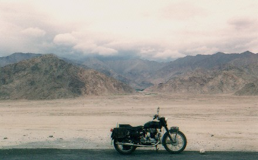
We check out of the hotel and ride the main road west towards Kargil. Just outside town we stop at a military museum next to the Leh airport which is dedicated to the mountain war between India and Pakistan. Here at the top of the world they are still fighting artillery duels. The upper floor has displays of battles on the Siachen Glacier 100 kms to the northwest. At 22,000 ft they are still lobbing artillery rounds at each other. It is the highest battlefield on earth, and India loses more men to pulmonary edema, cerebral edema and altitude sickness than it does to the enemy. I see equipment on display from many countries…..Canada, Germany, Austria are a few. Mostly climbing gear and winter clothes........ the white coats and snow boots are from Canada.
Later we sit outside next to the airport and watch a Tupelov Indian Army transport jet come in to land. I put a 135mm lens on my Pentax to see it more clearly as it crosses the other end of the long runway. Suddenly I hear Peter yell " Tree ..... it is forbidden ! " Oops, I forgot and stow the camera back in it’s case. So much for my telescope ..........
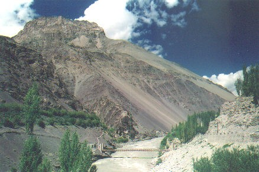 . 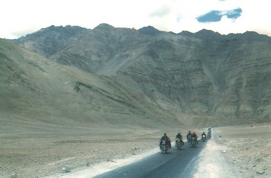
Footbridge over the Indus River The not so Magnificent Seven !
We travel along the Indus river valley as it flows downhill away from us and see a drier country with large brown expanses each side of the road. Only the strip of green along the river and the odd village break up the landscape. On our left is the river and formidable Zanskar mountains , and on the right is the Ladakh range both over 18,000 ft. We come to a stop overlooking the confluence of the brown turbulent Zanskar river plunging into the Indus 500 feet below us. There is a large group of people on the beach with trucks, buses and horses. I see large shiny reflector boards bouncing the fill light off the sun into the actors shadow side ........... a feature film being made !
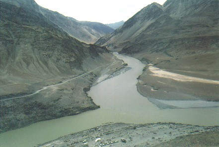
Film set on beach below where Zanskar River comes north to meet the Indus.
There are dozens of monks in red robes , horses, and you can see the leading lady by her flowing dress. Off to the side is a tent with food on tables where people lounge on chairs until their turn comes before the camera. I notice an odd squared off truck we saw days ago when it passed us at night near Sarchu, it was unlike any other Indian truck I had seen on the road. I now realize it is the generator truck, parked farther away for sound with power cables snaking from it towards the camera and lights. The actors look like they are having a good time.
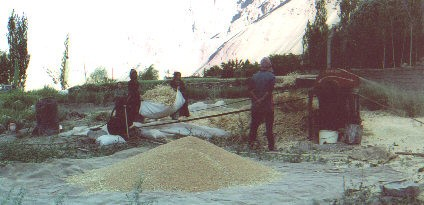
We continue west and turn left off the highway to cross the Indus on a concrete bridge. We pass a field where a man is threshing grain on an old gas powered machine, the women are carrying freshly cut bundles to him. We backtrack 2 miles along the river to Alchi Gompa, a very old Buddhist monastery. We will set up our tents in a courtyard behind it and stay here for 2 nights as our basecamp. Tomorrow is a day trip to Lamayuru and the Fotu La pass. I wander down to the river by the large stone walls of the monastery. There are hundreds of beautiful prayer stones along the top of the wall, all carved by hand. I suspect it represents a few hundred years of work.
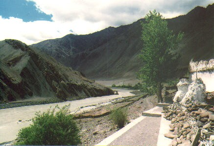 . 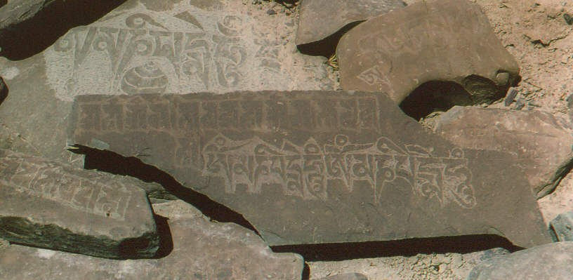 .
Alchi temple by river Close up prayer stones piled on right side of first photo
The Indus rushes by on its journey to the plains of Pakistan , I wonder
how many generations lived here before us without ever seeing a car or
bike.
Day 15:
Lamayuru and the Fotu La pass
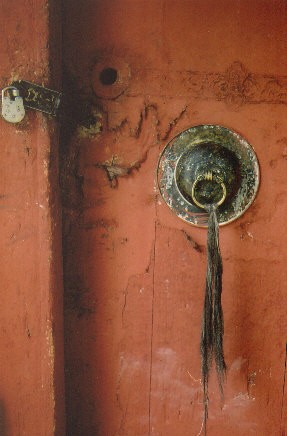
After wandering around the temple and looking at the carved wooden statues and paintings, I go up the street in this small village to a large open air water tap. It comes down from the hills nearby and spills out the pipe into the street. There are kids bathing under it , and ladies washing clothes. I wait my turn and put my head under for a few seconds then walk away so others can use it. After shampooing I go back and rinse off. Feels great. The people smile and laugh, everywhere we go in Ladakh it is friendly like this.
Soon we gear up the bikes and head west again to Photu La , our last pass and a famous monastery, Lamayuru. We follow the Indus river west again and stop at another army post to have our papers checked. There is a policeman on a smaller 350cc Bullet who is just leaving, and we follow him. Soon we are climbing an incredible series of hairpin bends called the Hanging Loops up a mountain.
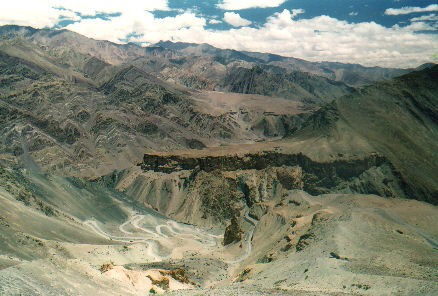
Hanging Loops
I think there are about 40 of them. Our bikes are faster and I pass the 350 Bullet early. I have a feeling he is trying to keep up with our bigger bikes but soon lose him in my mirrors. Later, partway up the mountain I stop to take a photo and notice our jeep parked far below me with one of our bikes. The 350 is in the ditch and our guys are helping the policeman. I find out later that he was riding too fast trying to keep up with us but is ok. He decides to turn around and go back.
At one point following the others, we squeeze by another loaded truck, one of hundreds we have overtaken on this tour. I am the last in a string of 5 bikes and riding just behind Helmut. As usual, there is very little room between the truck and the inside cliff wall and ditch on the right. We make our standard dash through the diesel smoke and dust along the 3 foot wide path. Helmut gets halfway past the truck then rides up over two flat rocks , each as big as a large book. One of them flies back about 2 feet off the ground but I manage to miss it when it lands. Somehow Helmut hangs on. We are often inches from the truck or bus wheels during these stunts, on one occasion the driver started to turn my way at the last moment. I could see the large tire coming my way and I had to put my hand on his front fender as I finished passing. Somehow this has all started to feel normal .
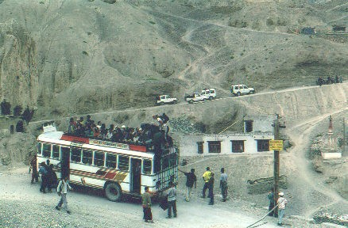 . 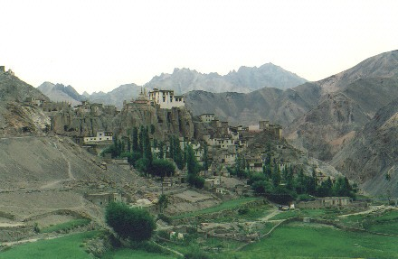
Lamayuru monastery
When we get to Lamayuru there is a huge festival going on. Buses full of pilgrims have arrived and the courtyard is filled with monks and tourists. An immense tankha is being unrolled from a rooftop down the side of the building, it must be 50 ft long.
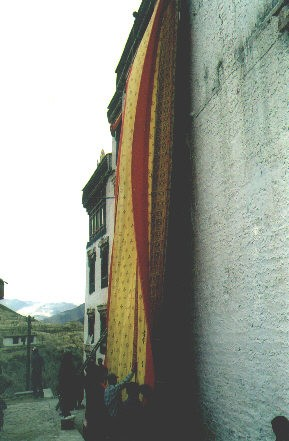 . 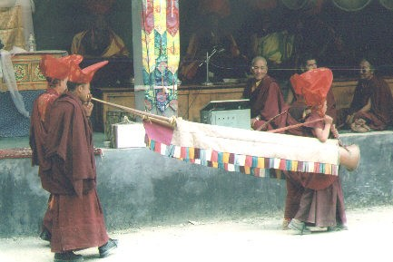
The huge Tibetan trumpets are being carried by two monks each, their deep sound is earthshaking. The local women have those wonderful Tibetan hats with the curled up corners. I try to get a good photo of a lady in profile, but even with my long lens it is not possible today.
15 kms after Lamayuru we climb to the top of Fotu La pass at 4094m. This is the farthest we will get from Nagar , 667 kms away. I take a photo of two trucks coming west with lots of people waving on top. This is the main route to Srinagar , and shorter than Manali. Most non strategic goods come this way, fruit, chickens, people. Army supplies, troops and fuel come up NH 21 to avoid Kargil where the mountain border overlooks the road. We meet another Bullet rider from New Delhi who has built his own BMW clone with some creative body alterations.
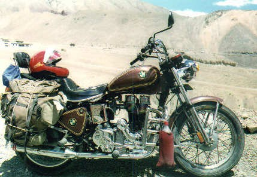.. . 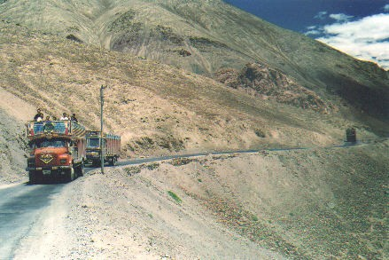
Top of Photu La pass
As we head back east to Alchi a light drizzle
begins. This creates a new problem as the
paved sections up the hanging loops are all covered in oil from the
dozens of trucks clawing up the hills daily. For weeks there is no
rain here, and now I can feel the front wheel
starting to drift on the downhill straights,
even geared down at low speed with no brakes ....... arrrrrrrrgh
! I calculate the odds of seven bikes
staying upright for the next 15 kms of hairpin
bends……. not good. I am now starting
to wonder if I will make it down, these are the worst
conditions I have seen anywhere. Somehow by
sheer luck and reflexes I keep it up. At the bottom I hear that two of
the bikes have gone down but with no damage to speak of, just bruised egos.
Day 16: Hemis Gompa
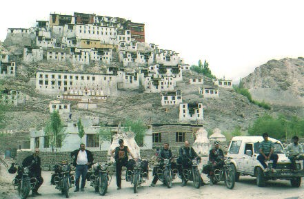
Thikse
From Alchi we ride past Leh 50kms to Hemis
Gompa. Halfway between Leh and Hemis
we stop at Tikse monastery
for a group photo. At Karu we branch off to cross the Indus
and head up into the Masho mountains. It is a winding road that leads into
a hidden canyon. Here is the biggest and richest
Buddhist monastery in Ladakh. Built
in the 17th century, it is the seat of the Drukpa order and administers
all the other Ladakh monasteries. I am told that it was protected from
invaders by its hidden location,
and has never been pillaged. It has a tankha which is only shown every
11 years and is supposed to be the largest in existence. Next exhibit
will be summer 2013.
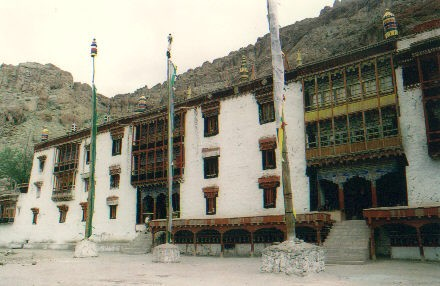 . 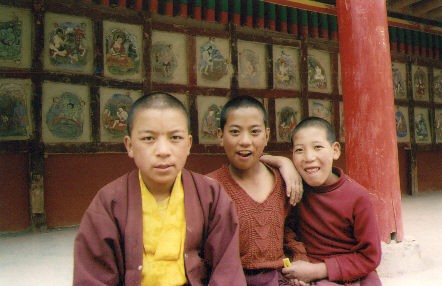
We tour the grounds and I meet three young kids who are monks. They are curious about my camera case. I let them look through the camera with a wide angle lens and they laugh and joke with each other. I want to take a photo of them which is like asking kids if they want ice cream !
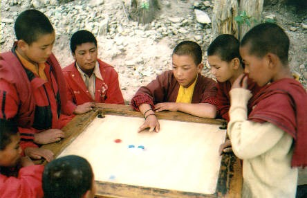 . 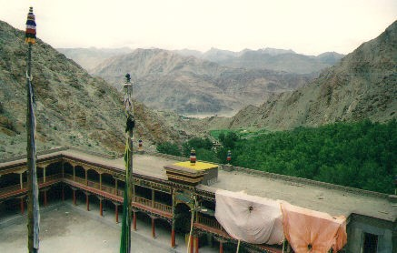
We ride back down to the village of Hemis and negotiate a fee to pitch our tents. It is in a farmer’s front yard by his house which seems to be a popular spot for tourists. The local kids come from all around to watch the crazy bikers set up camp. Uwe has brought some balloons from Germany , and the kids go wild as they run around blowing them up and chasing them. One boy about 7 seems more shy than the rest, his friend tells me that he lost his father in a bus accident . The boy’s face lights up when we get another balloon out for him. I see life in these villages can be hard.
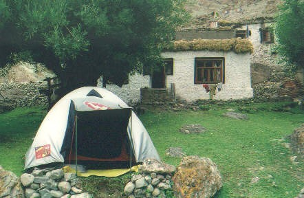 . 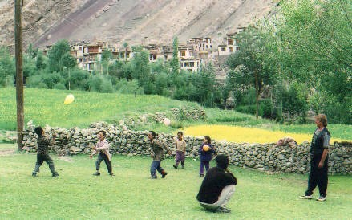
After another great six pot supper from our cook Mickey, I watch the golden light hitting the mountains to the east of us across the Indus valley. Nyima, the camp boss , sits with me on a stone wall beside my tent and we talk about treks he has made. I ask if he has had any bad ones, how difficult it gets. Tibetans are very modest people and it takes some prodding to get a story out of him. Finally he says " Yes, there was one trip ............. we were crossing a pass in deep snow and ran out of food after ten days. It took two more days to walk out but we all made it. He just nodded his head quietly and said “ ........ that one was hard. ”
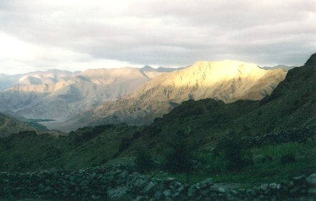
Day 17:
Storm up high
Now we are heading home in earnest. The weather is sunny as we turn southwest at Upshi. In the next 60 kms we will climb 2000 meters to the top of Tanglang La . The valley has deep red rock walls and bright green patches of trees and grass, some in the middle of the river.
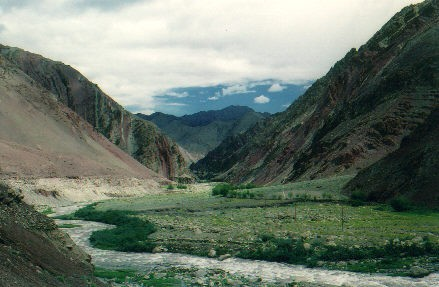
Gradually as we climb we enter a treeless exposed landscape on the approaches to the pass. I stop next to Uwe who has a flat rear tire, his second of the trip. He seems resigned to his fate, and just smiles while he waits. Helmut stays with him as I push on, Ashok will be here soon in the jeep and usually takes about 15 minutes to repair one.
I am alone now as we are all spread out for many miles on this high desolate stretch. It gets colder as I climb, probably about 5 degs C . There are heavy clouds ahead on the peaks and things are changing fast. I have to leave the bike and run uphill for a quick visit, my system is rebelling again. As I settle down on the treeless barrens I can see for twenty miles back the way I came. It is quiet except for the odd crow, and there is not a vehicle in sight. Riding on I am in no rush to get down. This is a good feeling, alone at the top of the world. One of those moments that stay in your 2 wheel memory. I am happy we are spread out today.
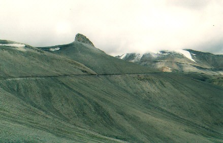
Road in distance climbing up to Tanglang La
At the top of Tanglang La I am once again at seventeen and a half thousand feet. There is no one waiting for me and I can see why. A storm cloud hides the valley ahead. I put on my rainpants and shove off. Soon it is snowing and freezing rain, the dirt road becomes a river of water running downhill. I can see 10 miles down the mountain and still there is no one in sight. I may as well be on the moon, it feels like I am. My jacket has a layer of ice building up on the front but I am still warm. It is the worst weather so far, but for some reason I am enjoying it. If I was in a car I would miss out on this. Yes , I would be warm and protected but you never get the same feeling of really being there like a bike gives you. ( some would say that's a good thing ! ) After crossing Tanglang La on a bad day you are a different biker. It is immense and humbling but at the same time it energizes you........ no road seems impossible afterwards.
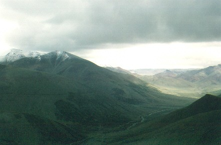 .
On top of the pass looking south
At the bottom in the valley it is warmer and sunny. I see a lone bicyclist coming towards me as I stop. We have passed many bikes on the trip north, Ladakh is popular with the Europeans. He is British and asks what it is like up ahead. “ Oh, not bad ………. rain, snow, freezing rain…… you’ll love it “ , I reply.
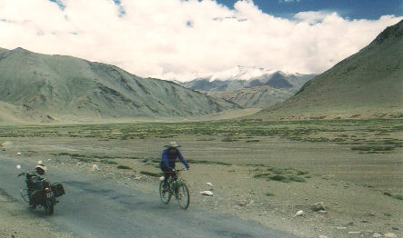 .
“ Bloody ‘ell ” he mutters , thanks me and pedals off to his fate.
Later I meet Peter and most of the others taking a break at a chai stop and we head for Pang. We are on the More Plains again, lots of goats and yaks. Another Bullet overtakes us, some crazy tourist guy with his girlfriend hanging on for life. Later we see them by the side of the road. The goat they have just hit has run off. The bike has been down but nothing seems bent too much. If you love speed.......... Divorce her !
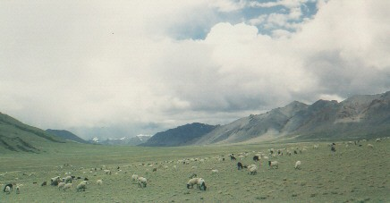
Beware of the speedbumps - More Plains
We arrive in Pang after the 2pm deadline
when they shut down outbound traffic, so we are basically stuck there until
the next day. The army will not let us one
mile past their checkpoint to our last campsite
by the river, I think they know we would probably keep going. We
are forced to put up the tents on the only flat area, behind the parachute
store village of the Tibetan locals.
Unfortunately this is also an area used for other things. I call it ‘ Tenting
on the shit fields of Pang ’. We manage to avoid the worst areas,
but I also know that everything dries and turns to dust very fast up here.
Best
not to wonder how much of these airborne organics
are flying around us. It is windy, so we tie the eating tent to both
jeeps again. After supper everyone hits the sack early.
Camping
at 15,600 ft again I still sleep like a log...................
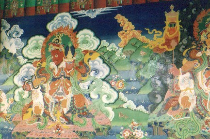
| ------- To India part 5 --------- |